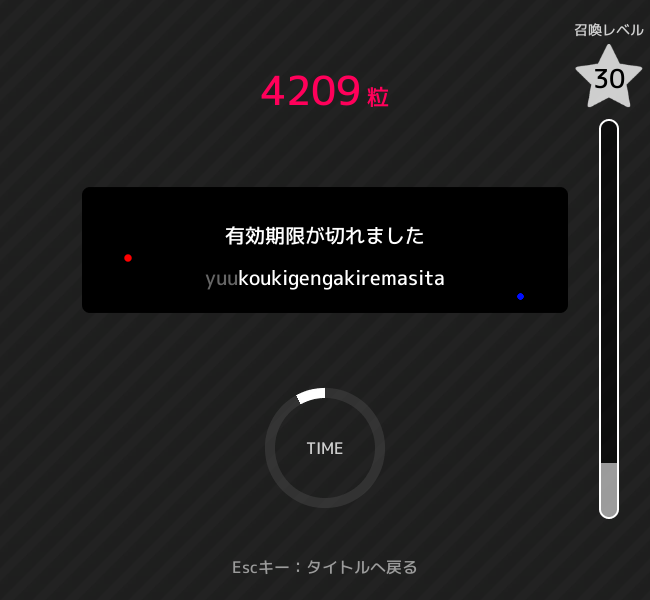

設定

【使い方】
ゲーム画面の赤点と青点をクリックしてください
※プログラムの動作にはpython3、tesseractとその他モジュール、ラッパーのインストールが必須になります。
プログラムが正常に動作しない場合はエラーメッセージを参考にモジュールをインストールしてください。
チートツールを使用してランキング登録するのは利用規約違反です。絶対にやめてください。
ゲーム画面の赤点と青点をクリックしてください